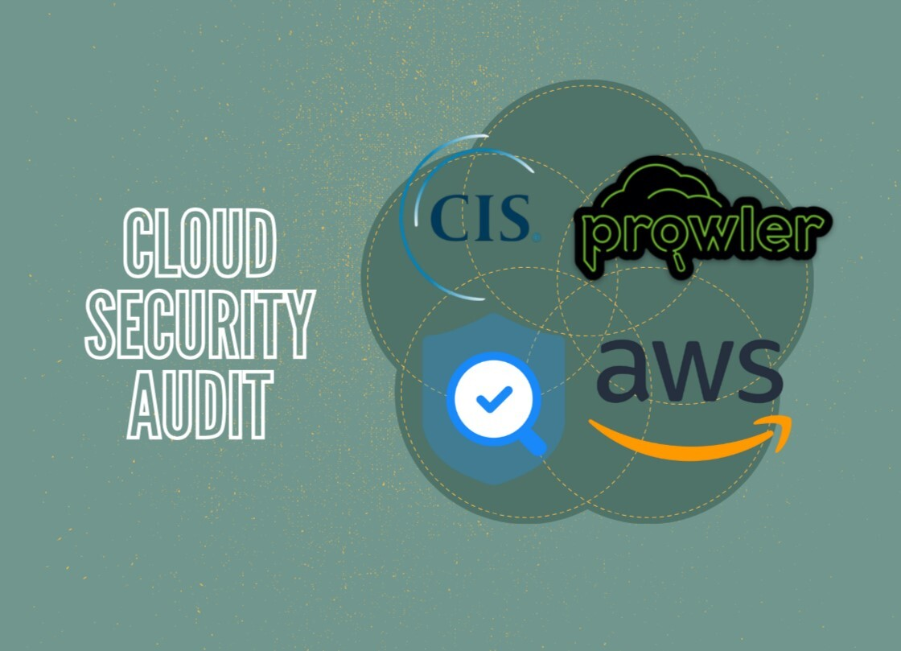

IAM & CIS Cloud Security Audit
In this project I have added a user into a group through IAM, granting them access to perform specific tasks based on the least privelage premise and added custom password policy to ensure maximum security. We will also review all changes made through CloudTrail. Then we will perform a CIS benchmark audit with Prowler which is an open source security tool used to perform Cloud security best practice assesments, audits, forensics readiness and much more.
Steps taken to complete a CIS audit:
1. Open AWS Identity and Access Management with root user acount and create a new user.

2. For user permissions, select "Add User to a group" and create a new User Group.
3. Name the new User Group and provide "Administrator Access". This policy allows the user full access to everything.
4. Now create a second user.
5. For user permissions, select "Add User to a group" and create a new User Group.

6. Name the new User Group and provide "AmazonEC2ReadOnly". This policy allows the user only read access to EC2 instances.
7. Now head over to Account Settings and create a Custom Password Policy to ensure increased security and allowing users to change their own password.
8. Open AWS CloudTrail and select Event History to view all the management events showing the changes we just made.
9. Open the AWS CLI known as CloudShell.
10. Copy the quick start commands from Prowler's website for AWS CloudShell to install Prowler and any missing dependencies.
11. Now create a new user with a Policy attached directly to perform security audits and full access to S3.
12. Now configure Prowler to have access to run the scan by typing "aws configure" on CloudShell and pasting the Access Key of our Audit User.

13. Check available compliance frameworks by executing command "prowler aws --list-compliance".
14. Run a CIS-1.4 compliance check by running the command "prowler aws --compliance cis_1.4_aws".
15. Open AWS S3 and create a new bucket to store the CIS audit results.
16. Store the detailed results of the CIS audit into the new S3 bucket through the CLI.
17. Check S3 bucket to ensure audit result was saved.
18. Download and open file to see if and where CIS benchmarks have and have not been met.